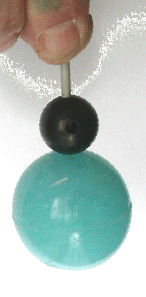
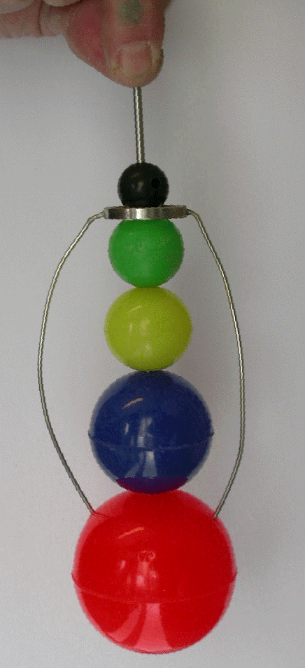

|
A: Artiklen i
pdf
B: Det anvendte
FPro-program
C: Nårværende side i
pdf------
doc
|
HOP-OP MULTIPLIKATOREN
Indledning til LMFK-artiklen:
Hoppende bolde - stødende vogne
Artiklen
omhandler en af de opgaver, der blev stillet som opvarmning til
den danske udtagelse til fysikolympiaden 2000. Den redegør
for, at den forklaring, der formodentlig var tænkt på
som løsning til en af opgaverne, IKKE er fyldestgørende.
Herunder følger først en kort indledning til
problemstillingen. Derpå beskrives et fascinerende apparat,
hvis virkemåde undertiden ses begrundet ud fra samme
letforståelige forklaring.
Det er en
konklusion af artiklen, at denne forklaring blot beskriver en ud
af mange løsninger, der alle opfylder bevarelsen af energi
og impuls
|
|

|
Virkemåde
Den dobbelte multiplikator vist
her er fremstill et ved at stikke en stump strikkepind ind i en
gummibold, der er så elastisk, at den efter et lodret fald
fra en vis højde, springer næsten lige så højt
op igen. En lille hård plastikkugle monteres nu, så
den kan glide frit op og ned på strikkepinden. Lader man
dette to-kugle system falde fra f. eks. h = 50 cm, vil den
lille kugle springe op over h = 1 meter.
Denne meget iøjnefaldende og
overraskende effekt forstærkes mange gange med den
fire-dobbelte multiplikator vist i næste figur. Her er
tre elastiske kugler i aftagende størrelser indskudt på
strikkepinden mellem den store kugle forneden og den lille
foroven. Taber man denne på et hårdt stuegulv fra h =
50 cm, så vil den lille kugle foroven springe op så
den med betydelig fart knalder mod loftet. Ved fald h = 1m i vor
skoles aula, rammes loftet i 9-10 meters højde med et
tydeligt smæld.
Ringen mellem øverste og
næstøverste kugle i den nederste multiplakator har
intet med sagen at gøre – den skal blot hindre at de
tre mellemkugler hopper af pinden.
|
|

|
En forklaring:
Den dobbelte multiplikator
Den lille multiplikators virkning ses
undertiden forklaret som følger. Vi forestiller os, at de
to kugler falder fra en højde h med med en lille
smule adskillelse, således at den lille rammer den store
umiddelbart efter, at denne har begyndt sit opspring, og dermed
har samme fart v som den, hvormed den ramte gulvet, blot opad.
Den relative fart i sammenstødet bliver dermed 2v,
og antages den lille kugle meget let, vil sammenstødet
vende dens fart i forhold til den store (ligesom den store fik
sin hastighed vendt ved sammenstødet med jordkloden). Den
lille vil altså flyve opad med farten 2v i forhold
til den store, der selv bevæger sig opad med v. Dermed vil
den lille altså flyve opad med farten 3v. Sammenstødet
har altså forøget dens kinetiske energi 3*3 = 9
gange, nok til at løfte den til 9 gange udgangshøjden.
Så voldsom er effekten ikke i den virkelige verden:
Elasticiteten er ikke fuldkommen, den store kugle er ikke
uendeligt meget tungere end den lille, og den lodrette akse
kæntrer nok lidt under faldet, så den lille oplever
gnidning mod strikkepinden.
Den fire-dobbelte multiplikator
På baggrund af ovenstående
forklaring for den lille multiplikator, er det let at forstå
den store: Ved at antage, et lille mellemrum mellem kuglerne får
vi systemets samlede møde med gulvet delt op i en række
enklelte elastiske stød – altså stød
med bevarelse af såvel impuls som kinetisk energi. Det er
let at regne på sådanne – også uden den
simplificernede antagelse at øvre kugle er meget lettere
end nedre. Spørgsmålet er imidlertid om metoden er
korrekt? I den artikel, der kan klikkes frem, vises, at det er
den IKKE. Om den lille multiplikator vises det, at antagelsen om
en lille adskillelse mellem kuglerne, og den deraf følgende
opdeling i elastiske enkeltstød, fører til
opspring, der afhænger stærkt af størrelsen af
det lille opspring. Hvis den nederste kugle ikke er helt færdig
med at vende sin fart, når den rammes af den øverste,
fås en ganske anden slutbevægelse.
|